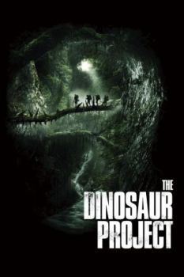

Projeto Dinossauro (2012)


Você achou que eles estavam extintos. Agora é a hora de descobrir a verdade.

Avaliação (TMDb):


4.7/10 (127 votos)
Avaliação (Usuário):
Outro Título:The Dinosaur Project
País:South Africa, 83 minutos
Idiomas falados:Inglês, Português
Gênero(s):Aventura, Ação
Diretor(s):Sid Bennett
Codec:MPEG-2 (DVD)
Número: 4682
Sinopse:
Médica acompanha pai e filho que querem fazer um documentário durante uma viagem ao Congo. Lá, eles descobrem criaturas que pensavam ter sido extintas... dinossauros. Agora, com uma câmera na mão para documentar tudo, eles lutam para sobreviver.
Elenco:
Natasha Loring, Matt Kane, Richard Dillane, Peter Brooke, Stephen Jennings, Andre Weideman, Abena Ayivor, Sivu Nobongoza
Tipo de mídia: DVD5,
Legendas: Português,
Alugado: Não
Tela: 2.35:1